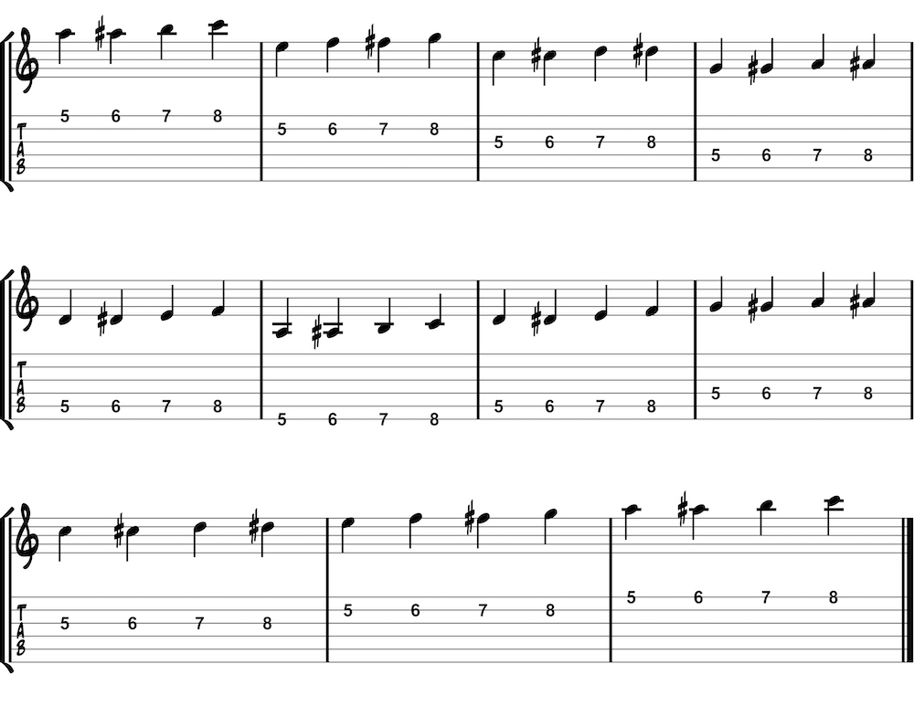

Spider exercises are named for the appearance of the fingers crawling across the fretboard. Most of these exercises sound a bit dissonant and spooky but are great tools for building technique. Many beginners have trouble keeping their left-hand fingers in a ready position. These exercises help get your fingers accustomed to the feel of a good position.
One-finger-per-fret with the first finger at the fifth fret. Once you play a note, leave the finger down on the string until it is needed again--even when changing strings. Like always, start off slowly and intentionally.
One-finger-per-fret at the fifth fret. See and feel the fingers walking across the strings. Keep each finger down after a note is played.